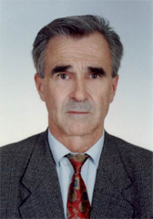

Редакционная коллегия

Белов С.В.
доктор технических наук
доктор технических наук
Родился 21 октября 1954 года в г. Харькове. В 1980 году окончил с отличием Харьковский институт радиоэлектроники по специальности «Автоматизированные системы управления».
Кандидат технических наук с 1987 года. Диссертацию защитил 18 декабря 1987 г. в Харьковском институте радиоэлектроники.
Блинов Н.Н.
доктор технических наук
доктор технических наук
С 1998 г. - заведующий научно-исследовательской лабораторией системных технологий ХНУРЭ. За последние годы в рамках госбюджетных НИР был ответственным исполнителем научно-исследовательских работ, в том числе: «Информационно-аналитическая система «Выборы», «Разработка информационно-аналитической системы по чрезвычайным ситуациям Полтавской области», «Разработка информационно-аналитической системы с распределенным искусственным интеллектом «Университет».